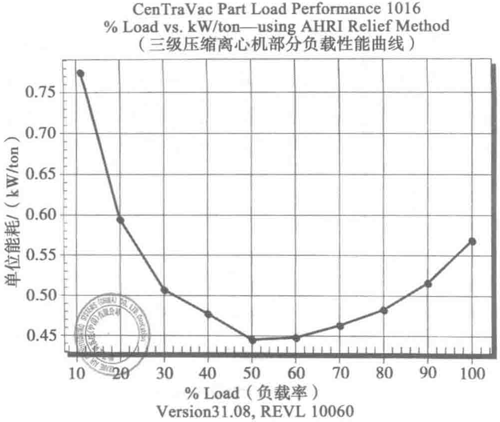

冷水机组和冷却塔切换为常规制冷状态，待该组冷源供冷稳定后关闭；随气温缓慢升高，按照以上操作，逐步增加切换机组的数量，直至将全部冷水机组切换为常规制冷状态，自然冷却工况结束。从常规制冷季到完全免费制冷季，可按完全相反的顺序进行操作切换。

对于加装了变频器的电动设备，比如水泵和冷却塔，保证设备频率随冷量变化动态调整很重要。前文中有提到，变频设备的流量与频率比成正比，功耗与频率比的三次方成正比。多台并机、降频运行可以极大地节省设备功耗。不过为避免水泵本体过热，频率不宜低于30Hz。相关数据如图10-52和图10-53所示。
| 测试对象 | 频率/Hz | 额定功率/kW | 实际输入功率/kW | 功率百分数 | 频率的百分比立方 |
|---|---|---|---|---|---|
| 冷冻泵 | 30 | 55 | 11.77 | 21.4% | 21.6% |
| 33 | 55 | 15.46 | 28.1% | 28.7% | |
| 35 | 55 | 18.26 | 38.2% | 34.3% | |
| 38 | 55 | 23.05 | 41.9% | 43.9% | |
| 40 | 55 | 26.90 | 48.9% | 51.2% |
| 冷却泵 | 40 | 75 | 38.1 | 50.8% | 51.2% |
| 43 | 75 | 47.03 | 62.7% | 63.6% | |
| 45 | 75 | 53.33 | 71.1% | 72.9% | |
| 50 | 75 | 72.75 | 97.0% | 100.0% |